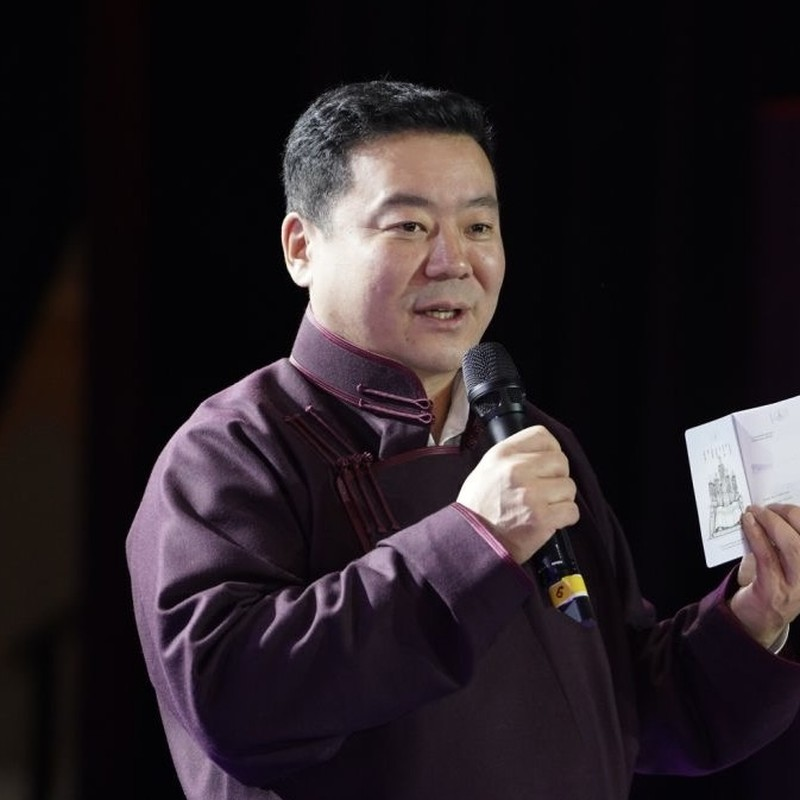
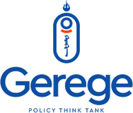
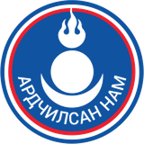
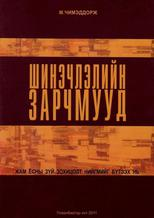
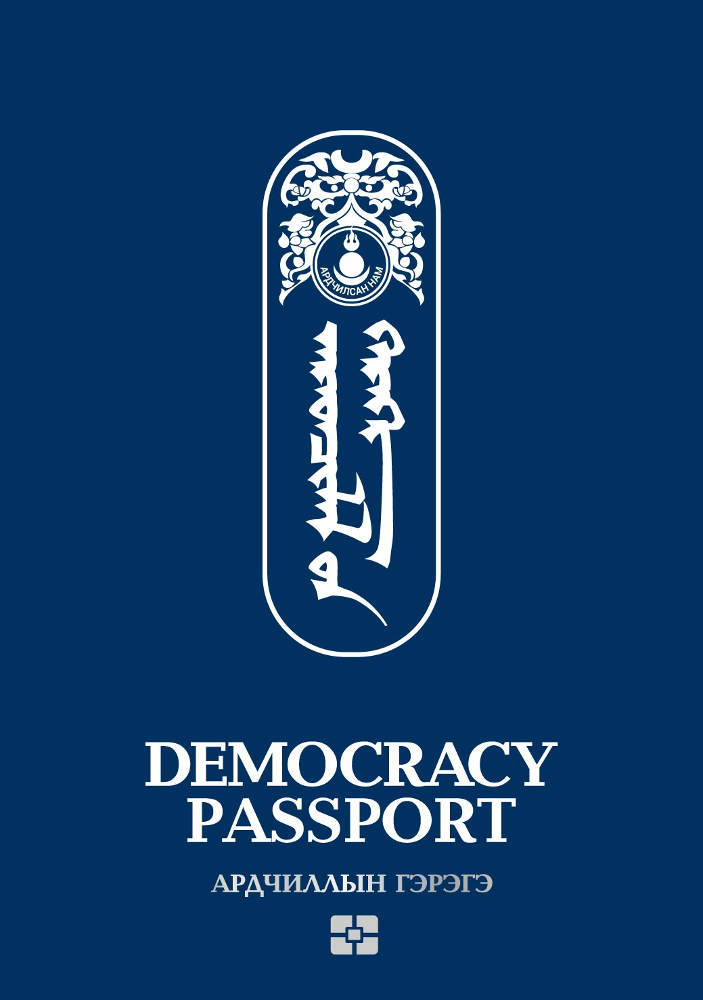
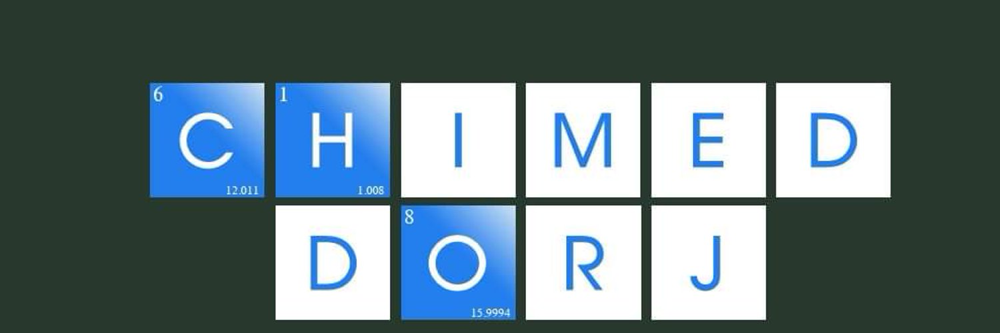

Once hardened by the winds and hardships of the steppe, I am now a city dweller, tethered to modern life by running water and the internet.
Chimeddorj Munkhjargal is an economist and public policy researcher who holds a Bachelor's (2005) and Master's (2011) degree in Business Administration from the National University of Mongolia, and a Master of Public Policy (2018) from the University of Oxford. Since 2025 he has been pursuing a PhD in International Relations at the National University of Mongolia.
He has spent more than a decade researching economic competitiveness, employment, and the efficiency of government investment. He initiated Mongolia's long-term labor market forecasting model along with national surveys on graduate and youth employment, and served as Director of the Institute of Labor Research under the Ministry of Labor (source: RAND Corporation, 2015).
Since 2017 he has been elected three times to the Democratic Party's National Policy Council. Since 2023 he has served as economic policy advisor to the Democratic Party caucus in the State Great Khural, and since 2024 as the caucus's Senior Advisor. Since 2026 he has chaired the governing board of the Gerege Policy Institute, affiliated with the Democratic Party. He has led the renewal of the party's platform and drafted the content of the 2026 "Democracy Gerege" policy document. He is the author of "Principles of Reform" (Monsudar, 2011). In recent years his work has centered on the energy transition and renewable energy policy.


National University of Mongolia, PhD program in International Relations.
Master of Public Policy (MPP). (Blavatnik School of Government, MPP Class of 2017)
National University of Mongolia, Management program.
National University of Mongolia, School of Economics, Management major (2001–2005).

A work formulating principles aimed at deepening the democratic process and building a naturally harmonious society. ISBN 978-9996-2-0574-3.

Drafted the content of a document renewing Democratic Party membership, incorporating national values and the ethos of freedom.
A translation of Milton Friedman's classic essay — bringing a foundational free-market text to Mongolian readers.
Read the translator's note →An analysis breaking the coal theft into the seven matters that must be investigated, and setting out the case for transparency and accountability.
Read full text →A policy essay on Democratic Party reform.
Read (Mongolian) →Four lessons of the Great Repression: the courts, the death penalty, sovereignty, and the question of terminology.
Read full text →An essay setting a teaching of Confucius against a bequest of Chinggis Khaan, by way of a remark from Akim guai the translator.
Read full text →Includes "An Election to Bring Accountability to a Government in Crisis," along with material by other authors published on the page.
All articles on baabar.mn (Mongolian) →Positions from an English-language interview on budget discipline, the IMF programme versus Chinese credit, interest rates and foreign banks.
Read the positions →An analysis of the four types of FDI and Mongolia's investment structure: macro stability and infrastructure matter more than tax breaks.
Original article (Mongolian) →Positions on urgent legislative procedure, the aviation fuel agreement, the interim Eurasian Economic Union agreement, and the barter clause in the mining exchange law.
Read the positions →On banks holding 94 percent of the financial market, a 17.3 percent lending rate, accumulation, and twenty years of investment in education.
Read the summary →The four types of FDI, the 81 percent of Mongolia's investment concentrated in resources, and why macro stability and infrastructure matter more than tax rates.
Read the summary →A 20-year investment policy proposal for shifting away from a bank monopoly and high interest rates toward a knowledge-based economy.
Original article (Mongolian) →While serving as Director of the Institute of Labor Research in 2013–2014, he partnered with the RAND Corporation, a U.S. think tank, to analyze Mongolia's labor market data and led the Mongolian team on a study of youth employment.
The study was the first in Mongolia to define and analyze the size and behavior of the most economically inactive youth — those not participating in the labor market, not engaged in any skills training or educational institution, and not involved in unpaid economic activity.
The findings identified a markedly disengaged group among youth in terms of employment and life outlook, and confirmed the pressing need to fundamentally rethink employment policy.
Read the full research report as PDF →A talk analyzing the cultural profile of Mongolians through Hofstede's cultural dimensions — with full transcript, key ideas, and video.
Read full transcript →A full lecture on how political decisions shape economic outcomes — key ideas, video, and full transcript.
Read full transcript →A talk on fair labor, property rights, and competitive markets — full transcript.
Read full transcript →An interview on the roots of the trade war, energy geopolitics, and the turning tide of globalization — full transcript.
Read full transcript →A talk on how energy, artificial intelligence, and materials technology are reshaping business models — key ideas, video, full transcript.
Read full transcript →A one-hour interview on education, corruption, and the limits of the state — full transcript.
Read full transcript →A 55-minute interview on the three goals of the 2016 reform, flaws in the party charter, and money in internal elections — full transcript.
Read full transcript →An interview on the economics of the nonprofit sector, the funds that sustain education, health, and the media, and the idea of letting taxpayers direct 9% of their tax into civil society — full transcript.
Read full transcript →An interview on the results of the barometer survey, the workforce shortfall in construction, and the gap facing social science graduates — full transcript.
Read full transcript →An interview on the four directions of reform, where factions came from, and why money flows into internal party elections — full transcript.
Read full transcript →Opening remarks on the philosophy of human rights, the citizen's critical thinking, and subsidies versus clean competition — full transcript.
Read full transcript →The Gobi is luminous, magnificent in its own quiet way.
The heads of taana grass whiten like falling hail,
and the airag gleams clear as a white silk khadag.
By day, a green mist drifts across the boundless steppe.
By night, a crescent moon hangs at the edge of the sky.
